PIXELCRAFT visual quality audit · 2026-11-05T13:42:57+00:00 · method pixelcraft-1.0
GITCRAFT Game Quality History (/games/)
forgecraft/ui/dist/games (Vercel build)
Confidence: only automatic journeys (no task-specific journeys with expected taps); browser emulation only (no physical-device evidence). Coverage and confidence are separate from quality; nothing is capped or awarded for code existing.
2 · Category scores
| Category | Area | Points | Awarded | Weakest metric | Evidence |
|---|---|---|---|---|---|
| Visual Quality | Spacing and rhythm | 25 | 21.4 | spacing values on a 4-px scale · 54% | measured ×120 |
| Visual Quality | Layout and composition | 25 | 25 | no horizontal overflow · 100% | measured ×200 |
| Visual Quality | Typography and hierarchy | 20 | 14.5 | a small set of font sizes · 41% | measured ×120 |
| Visual Quality | Buttons and controls | 20 | 13.3 | neighbouring targets not crowded · 25% | measured ×106 |
| Visual Quality | Visual consistency | 10 | 10 | few font families · 100% | measured ×54 |
| Usability | Interaction efficiency | 25 | 25 | journeys complete · 100% | measured ×16 |
| Usability | Navigation and discoverability | 20 | 16 | the current location is indicated · 0% | measured ×19 |
| Usability | Mobile ergonomics | 25 | 25 | responsive viewport meta · 100% | measured ×80 |
| Usability | Feedback and interaction states | 15 | 8.5 | controls react to hover · 4% | measured ×31 |
| Usability | Accessibility | 15 | 12.3 | axe-core WCAG 2.2 AA checks · 54% | accessibility ×30, measured ×10 |
| Consistency | Cross-screen consistency | 25 | 21.2 | headers, heading sizes and fonts match across screens · 70% | measured ×12 |
| Consistency | Component consistency | 25 | 25 | few button variants · 100% | measured ×6 |
| Consistency | Responsive consistency | 20 | 20 | the same content at every size · 100% | measured ×10 |
| Consistency | Design system adherence | 20 | 8.6 | a small set of corner radii · 0% | measured ×24 |
| Consistency | State consistency | 10 | 8.7 | pressed treatment applied consistently · 76% | measured ×4 |
3 · Strongest screens

4 · Weakest screens
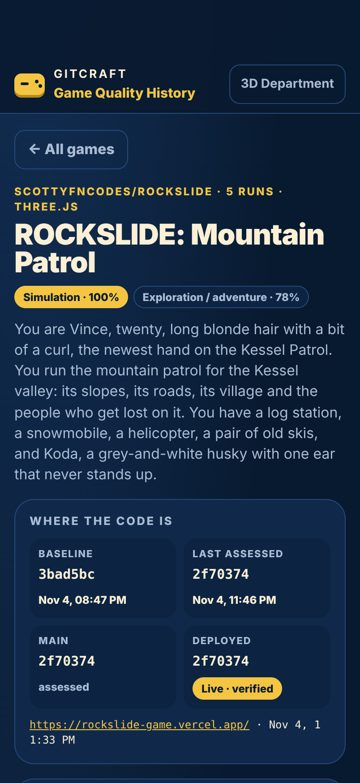
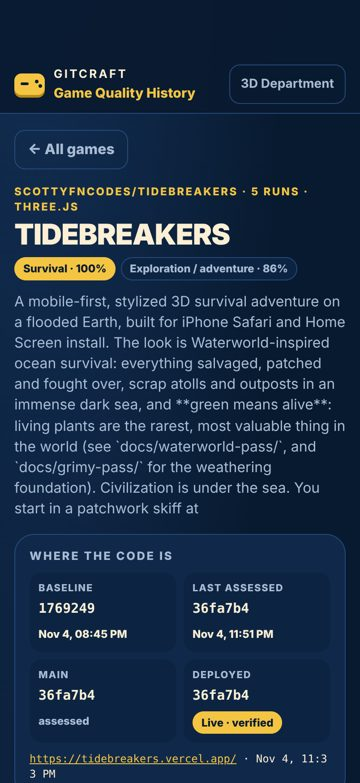
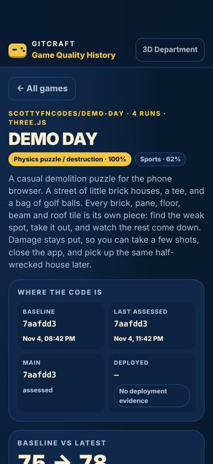
5 · Critical usability defects
Accessibility: Certain ARIA roles must contain particular children
critical Accessibility (axe-core)seen 24×fix now
axe-core rule aria-required-children (wcag2a, wcag131): Certain ARIA roles must contain particular children.
Fix: See https://dequeuniversity.com/rules/axe/4.10/aria-required-children?application=axeAPI — Fix any of the following: Element has children which are not allowed: button[tabindex]
Where and what was measured
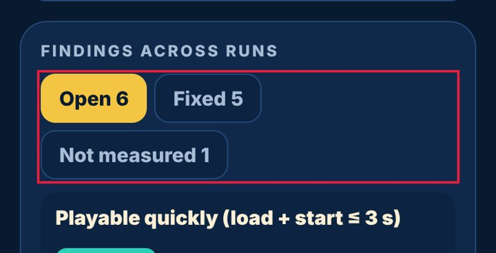
Accessibility: Elements must meet minimum color contrast ratio thresholds
major Accessibility (axe-core)seen 24×fix now
axe-core rule color-contrast (wcag2aa, wcag143): Elements must meet minimum color contrast ratio thresholds.
Fix: See https://dequeuniversity.com/rules/axe/4.10/color-contrast?application=axeAPI — Fix any of the following: Element has insufficient color contrast of 3.99 (foreground color: #6f88a8, background color: #10294b, font size: 9.0pt (12px), font weight: normal). Expected contrast rati
Where and what was measured
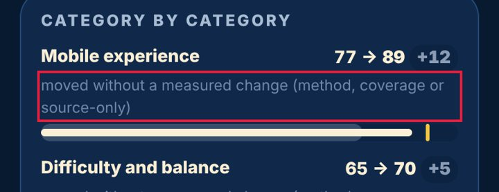
Accessibility: Scrollable region must have keyboard access
major Accessibility (axe-core)seen 12×fix now
axe-core rule scrollable-region-focusable (wcag2a, wcag211, wcag213): Scrollable region must have keyboard access.
Fix: See https://dequeuniversity.com/rules/axe/4.10/scrollable-region-focusable?application=axeAPI — Fix any of the following: Element should have focusable content Element should be focusable
Where and what was measured
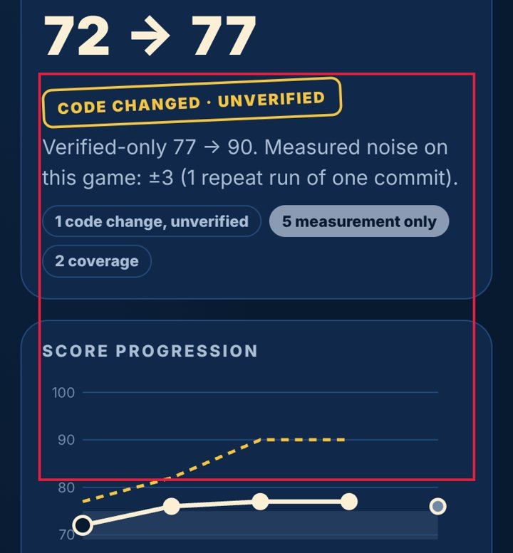
No pressed (active) state
major Measured (rendered DOM)seen 10×fix now
Pressing this control changes nothing visually until the action completes; on touch screens there is no hover, so this is the only immediate confirmation of a tap.
Fix: Add an :active style (darker tone, scale 0.97, or ripple) to every button and link variant.
Where and what was measured

6 · Spacing and layout defects
Text is too small to read comfortably
minor Measured (rendered DOM)seen 25×fix now
11-px text is below the 12-px minimum for phones; secondary information (dates, tags, captions) becomes hard to read.
Fix: Use at least 12 px (13-14 px preferred) for secondary text and keep hierarchy with weight and colour rather than very small sizes.
Where and what was measured
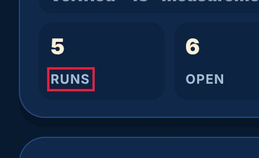
Uneven spacing between related elements
major Measured (rendered DOM)seen 13×fix now
Items of the same kind in one list or stack are separated by different gaps, which reads as grouping that isn't there and makes the list look broken.
Fix: Give the container one gap (flex/grid `gap`, or one margin rule for all items) instead of per-item margins.
Where and what was measured
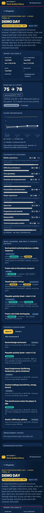
Lines of text are too long
minor Measured (rendered DOM)seen 11×fix now
About 154 characters per line; beyond ~80 the eye loses its place.
Fix: Cap text columns at 60-75ch (max-width: 70ch).
Where and what was measured
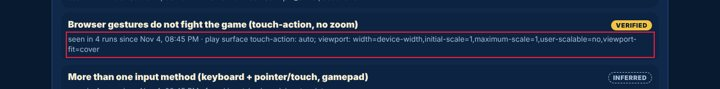
Spacing does not follow a consistent scale
minor Measured (rendered DOM)seen 9×next
Paddings, gaps and margins use many unrelated values, so the rhythm between elements looks accidental rather than designed.
Fix: Adopt a spacing scale (4/8-px steps: 4, 8, 12, 16, 24, 32) as tokens and replace one-off values with the nearest step.
Where and what was measured
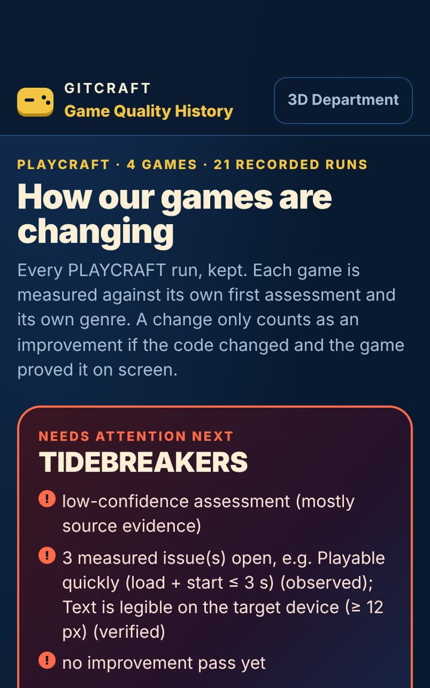
Controls stretch across the desktop window
minor Measured (rendered DOM)seen 1×polish
A 1086-px-wide button on a 1440-px screen: the mobile full-width style was never adapted, so the control looks bloated and the eye travels far.
Fix: Cap form and button widths on desktop (max-width 480-560 px) or lay forms out in a constrained column.
Where and what was measured

7 · Button and control defects
Touch target is too small
major Measured (rendered DOM)seen 24×fix now
202×41 px: under the 44×44 pt Apple HIG minimum (24 px is the WCAG 2.2 floor); thumbs miss and hit neighbours.
Fix: Enlarge the hit area to 44×44 (padding, min-height/min-width, or an ::after hit-area) while keeping the visible glyph size.
Where and what was measured
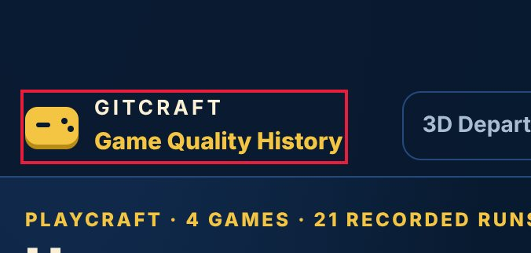
No pressed (active) state
major Measured (rendered DOM)seen 10×fix now
Pressing this control changes nothing visually until the action completes; on touch screens there is no hover, so this is the only immediate confirmation of a tap.
Fix: Add an :active style (darker tone, scale 0.97, or ripple) to every button and link variant.
Where and what was measured
No hover state
minor Measured (rendered DOM)seen 5×next
The pointer over this control changes nothing (colour, shadow, underline), so it does not signal that it is clickable.
Fix: Add a hover style (tone shift, underline, elevation) for every interactive component variant.
Where and what was measured
Click target is below 24 px
minor Measured (rendered DOM)seen 3×next
231×14 px: under the WCAG 2.2 24×24 px minimum target size.
Fix: Enlarge the hit area to 44×44 (padding, min-height/min-width, or an ::after hit-area) while keeping the visible glyph size.
Where and what was measured
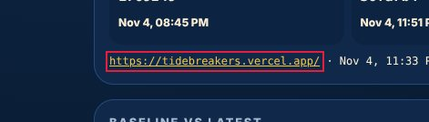
Two primary actions compete
minor Measured (rendered DOM)seen 2×polish
'TIDEBREAKERS Survival Exploration / adventure 77 LOW CONF. C' and 'DEMO DAY Physics puzzle / destruction Sports 78 LOW CONF. ME' are both strongly filled, similar in size and side by side, so neither reads as the main action.
Fix: Keep one filled primary button per group; make the other secondary (outline or tonal).
Where and what was measured
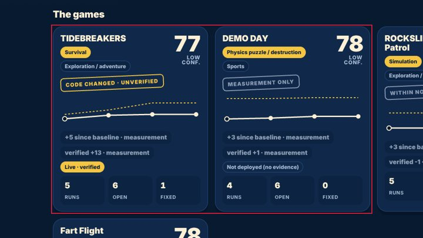
8 · Mobile-specific findings
Controls are too close together
minor Measured (rendered DOM)seen 24×fix now
'Open 6' and 'Fixed 5' are 6 px apart and at least one is under 44 px: an easy mis-tap.
Fix: Keep at least 8 px between targets (more next to destructive actions), or merge rarely used actions into one overflow menu.
Where and what was measured
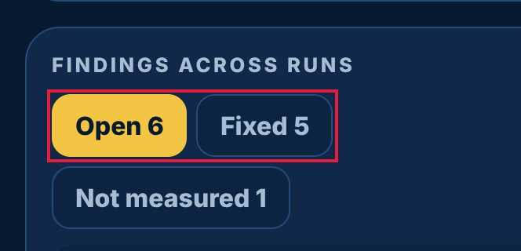
9 · Screenshot gallery
Browser emulation (Playwright + Chromium; iPhone safe areas emulated through CDP). No physical-device evidence was supplied.
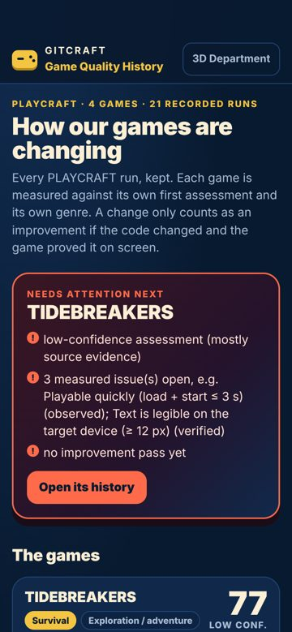
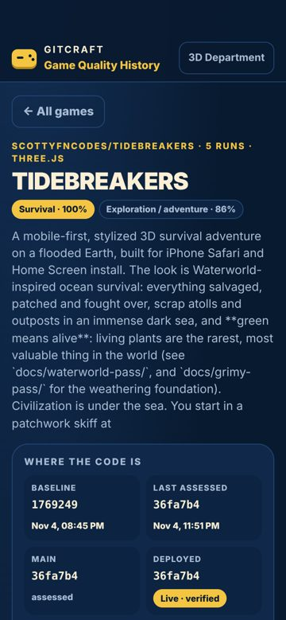
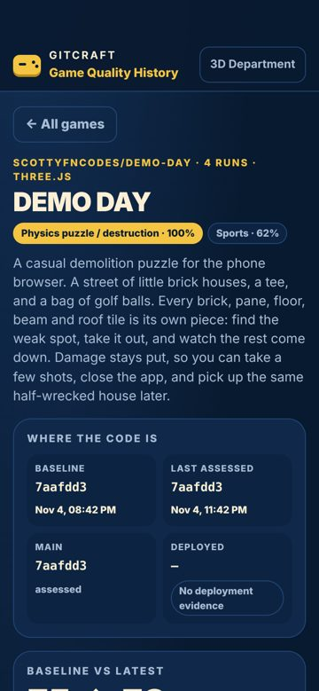
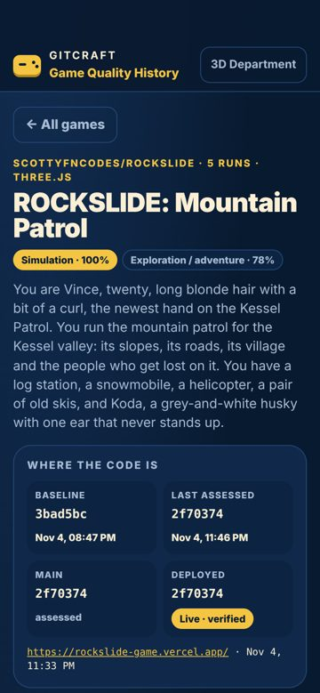
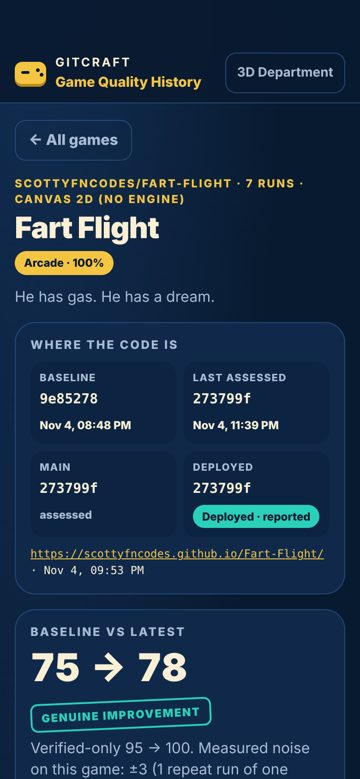
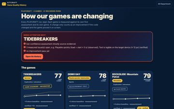
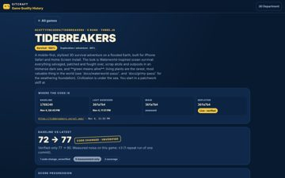
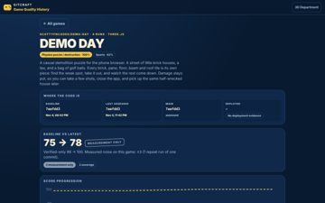
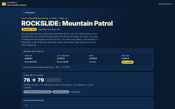
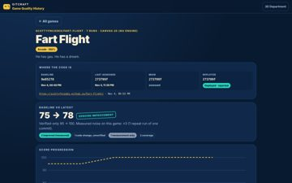
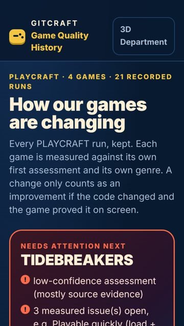
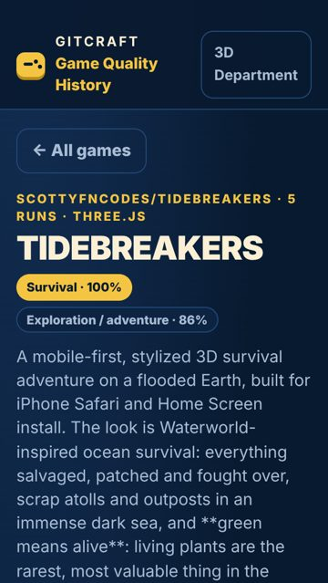
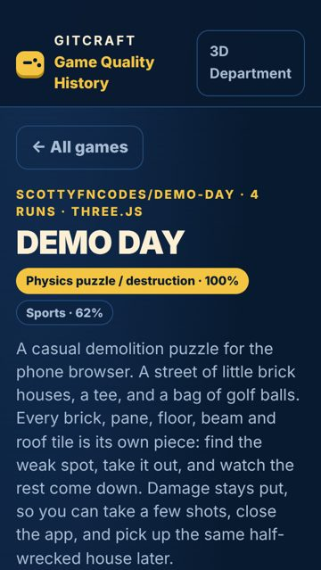
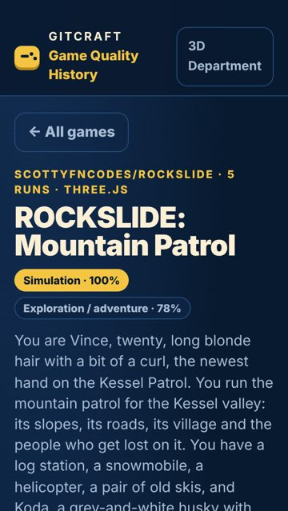
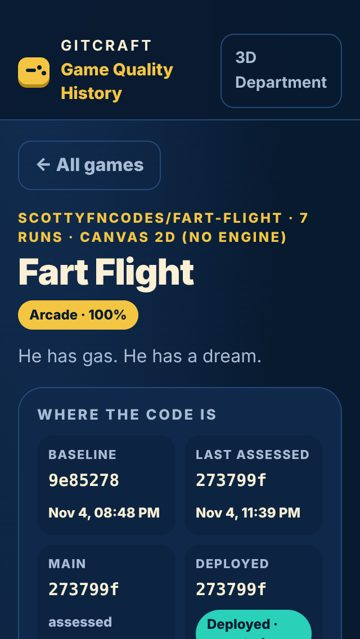
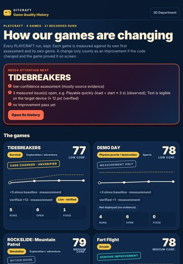
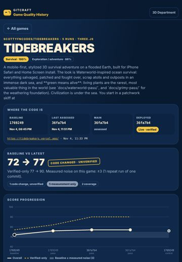
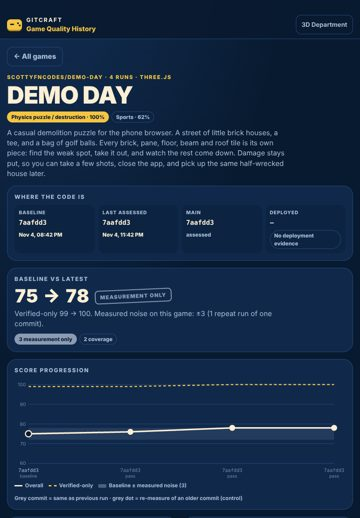
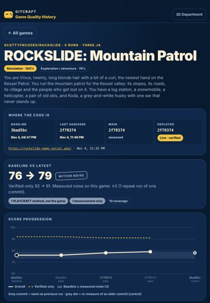
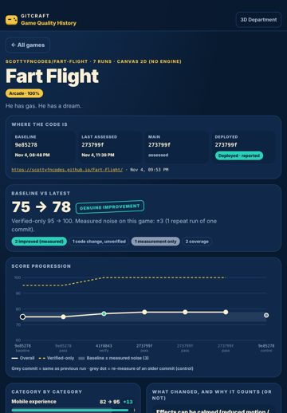
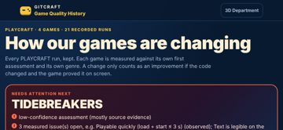
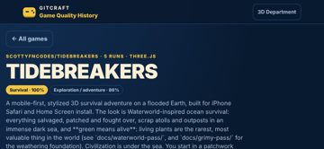
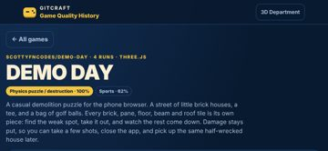
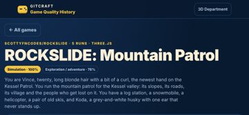
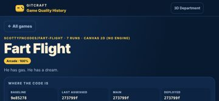
10 · Prioritised improvement plan
| # | Tier | Fix | Severity | Seen | Cost |
|---|---|---|---|---|---|
| 1 | fix now | Accessibility: Certain ARIA roles must contain particular children See https://dequeuniversity.com/rules/axe/4.10/aria-required-children?application=axeAPI — Fix any of the following: Element has children which are not allowed: button[tabindex] | critical | 24× | low |
| 2 | fix now | Accessibility: Elements must meet minimum color contrast ratio thresholds See https://dequeuniversity.com/rules/axe/4.10/color-contrast?application=axeAPI — Fix any of the following: Element has insufficient color contrast of 3.99 (foreground color: #6f88a8, background color: #10294b, font size: 9.0pt (12px), font weight: normal). Expected contrast rati | major | 24× | low |
| 3 | fix now | Touch target is too small Enlarge the hit area to 44×44 (padding, min-height/min-width, or an ::after hit-area) while keeping the visible glyph size. | major | 24× | low |
| 4 | fix now | Text is too small to read comfortably Use at least 12 px (13-14 px preferred) for secondary text and keep hierarchy with weight and colour rather than very small sizes. | minor | 25× | low |
| 5 | fix now | Uneven spacing between related elements Give the container one gap (flex/grid `gap`, or one margin rule for all items) instead of per-item margins. | major | 13× | low |
| 6 | fix now | Accessibility: Heading levels should only increase by one See https://dequeuniversity.com/rules/axe/4.10/heading-order?application=axeAPI — Fix any of the following: Heading order invalid | minor | 24× | low |
| 7 | fix now | Controls are too close together Keep at least 8 px between targets (more next to destructive actions), or merge rarely used actions into one overflow menu. | minor | 24× | low |
| 8 | fix now | Accessibility: Scrollable region must have keyboard access See https://dequeuniversity.com/rules/axe/4.10/scrollable-region-focusable?application=axeAPI — Fix any of the following: Element should have focusable content Element should be focusable | major | 12× | low |
| 9 | fix now | No pressed (active) state Add an :active style (darker tone, scale 0.97, or ripple) to every button and link variant. | major | 10× | low |
| 10 | fix now | Lines of text are too long Cap text columns at 60-75ch (max-width: 70ch). | minor | 11× | low |
| 11 | next | The same heading level has different sizes on different screens Style headings once, globally, from the type scale. | minor | 6× | low |
| 12 | next | Navigation does not show where you are Mark the current item with aria-current="page" and a visible active style. | minor | 6× | low |
| 13 | next | No hover state Add a hover style (tone shift, underline, elevation) for every interactive component variant. | minor | 5× | low |
| 14 | next | Spacing does not follow a consistent scale Adopt a spacing scale (4/8-px steps: 4, 8, 12, 16, 24, 32) as tokens and replace one-off values with the nearest step. | minor | 9× | medium |
| 15 | next | Click target is below 24 px Enlarge the hit area to 44×44 (padding, min-height/min-width, or an ::after hit-area) while keeping the visible glyph size. | minor | 3× | low |
Journeys
| Journey | Viewport | Result | Taps | Confirmations | Feedback ms |
|---|---|---|---|---|---|
| reach open-its-history auto | iphone17 | ok | 1 | 0 | 130 |
| reach demo-day-physics-puzzle-destruction-spor auto | iphone17 | ok | 1 | 0 | 137 |
| reach rockslide-mountain-patrol-simulation-exp auto | iphone17 | ok | 1 | 0 | 150 |
| reach fart-flight-arcade-78-medium-conf-genuin auto | iphone17 | ok | 1 | 0 | 130 |
| reach open-its-history auto | desktop | ok | 1 | 0 | 112 |
| reach demo-day-physics-puzzle-destruction-spor auto | desktop | ok | 1 | 0 | 138 |
| reach rockslide-mountain-patrol-simulation-exp auto | desktop | ok | 1 | 0 | 126 |
| reach fart-flight-arcade-78-medium-conf-genuin auto | desktop | ok | 1 | 0 | 152 |
Evidence and limits
- Every viewport is browser emulation (Playwright + Chromium 153.0.8010.12); iPhone sizes are CSS pixels and safe-area insets are emulated through CDP (Emulation.setSafeAreaInsetsOverride). Safari-specific rendering (WebKit), the real on-screen keyboard and physical reach are not reproduced.
- Browser chrome: the first screen is re-measured with the viewport shortened by 120 px (Safari's toolbars); dynamic toolbar collapse is not reproduced.
- Keyboard interference: fields that would zoom on focus (font-size < 16 px) are measured; whether the on-screen keyboard covers a field is not testable in emulation.
- Hover/pressed/focus states are sampled once per visual variant of control; focus visibility comes from real Tab presses (desktop).
- Canvas-drawn interfaces (games): the DOM does not describe what is drawn, so DOM-geometry metrics cover only the HTML overlay (HUD, menus); use judgements for the canvas.
- No physical-device evidence: findings are emulation results, not device results.